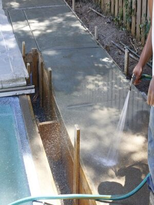

At TEXAN Concrete Ready Mix, we are ready to help you with any residential and commercial concrete projects throughout the Conroe area.
Our cement mixing and concrete formulating professionals can help you manage all aspects of the commercial concrete requirements for construction projects in Conroe.
Examples of commercial concrete projects we support include:

Moreover, our team can provide the proven solutions needed to manage large-scale infrastructure implementations and home improvement projects quickly and conveniently. Additionally, you can enjoy the on-time service and the most appropriate formulations for your specific needs.
Our professionals can provide you with the proven solutions you need to ensure the best results for projects large and small. Above all, we are an experienced Houston concrete contractor that will work with you to determine the right formulation and the best approach to your specific application. Therefore, if you need residential, commercial or infrastructure concrete services, TEXAN Concrete Ready Mix can provide you with the solutions you need to ensure the best results. Contact us today at 713-255-3333 to discuss your needs with us. We look forward to working with you.